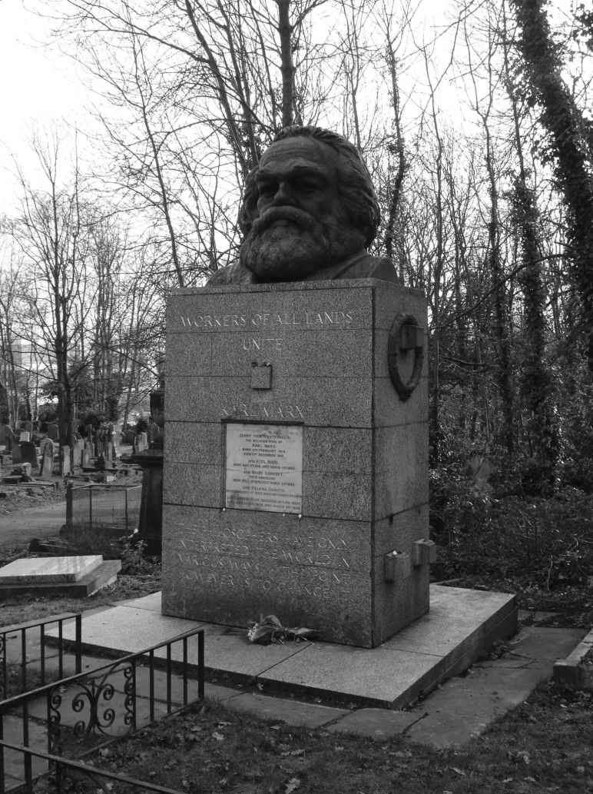

批判理论最初试图替代形而上学和唯物主义的主流形式。它的目标是阐明压迫背后的根源和遭到忽视的变革的可能性。然而，随着第二次世界大战的爆发，法兰克福学派得出的结论是解放的替代方案已经消失了。批判理论在黑格尔的所有牛在其中都是黑的那样的黑夜中醒来。 [18] 反抗呈现出越来越具有存在主义色彩的形式。它此时基于个人与社会之间非同一性的强化。“体系”成为参照物。否定面对着虚假条件的本体论。乌托邦的暗示与文明展开角逐。“他要么一切都想要，要么一切都不要。”布莱希特曾经写道，“面对这个挑战，世界通常回答：那最好什么都不要。”
法兰克福学派最早在美国受到欢迎，是因为吸引了其第一位历史学家马丁·杰伊提出的“1968年的一代”。直至20世纪80年代后期，批判理论在主流学术圈仍然被认为是异类，甚至在进步知识分子中间也被认为有些异乎寻常。然而，随着新左派的衰落，法兰克福学派逐步被纳入学术界当中。批判性法律研究、批判性种族理论、批判性性别研究开始质疑占据主导地位的范式与观点。不过，伴随下层群体从公共生活的暗影下浮现出来，对一个一体化统治体系的全面抨击开始减弱。新的重点放在对抗宏大叙事和公认的西方传统准则上，乃至对抗大众文化也混入其中。社会批判理论及其一致性，逐渐陷入危机。它的变革目标采取了越来越随意的形式。
应对现代社会中的帝国主义剥削、经济矛盾、国家、大众媒体以及反抗特征的新方案尚未产生。否定论给批判理论蒙上了一层阴影。黑格尔和马克思的思想继承人此时对权力缺乏理解，以至于没有能力应对权力失衡。法兰克福学派一些更受忽视的作品中存在着纠正措施。
诸如弗里德里希·波洛克的《国家资本主义》（1941年）等文章提供了一个出发点。它对计划经济的分析促使我们思考关于自由市场的讨论是否是时代错误，而国有化的传统概念是否等同于社会主义。奥托·基希海默的《限定条件与革命突破》（1965年）警告现代国家趋于使应急权力“常规化”。赫伯特·马尔库塞和弗朗茨·诺伊曼身后发表的文章如《社会变革学说史》和《社会变革理论》讨论了真正的社会批判理论必须面对的预设。
批判理论的当代哲学和文学分支通常将权力作为一种人为的社会或语言结构加以对待。积累过程消失了，体系拥有了自己的生命，个人要在缺乏任何机构或组织参照的认同或关怀理念中，为团结寻找一个共同的基础。由此，统治与剥削相分离，原则与利益相脱节。于尔根·哈贝马斯为批判理论中明显的形而上学和主观趋势提供了替代选择。
在他看来，沟通天然地基于话语的开放性、对每一个参与者平等地位的承认以及每一个人面对更好的观点时改变其想法的意愿。简而言之，沟通不需要某种与实践相分离的形而上学道德标准。它拥有自身的“普遍语用学”。或者换一种方式说，正是在强烈的沟通意愿下，沟通的道德标准在促进一致性的同时，保持着自主性。那些拒绝这种道德规范的人，或那些随意行使权力的人，也就拒绝了他们用来进行劝导的方法：从哲学的角度来讲，他们发现自己陷入了一种“践言冲突” [19] 。
但批判理论的形而上学转向抵制了——或者更确切地说吸收了——哈贝马斯的挑战。《罗伯特议事规则》体现了相似的原则。当然，这部指导公众集会的手册是否得到参与者的认真对待是另一回事。普遍语用学的实际贡献并不是不言自明的。沟通的道德标准允许自由主义者和理性主义者无论何时避免陷入践言冲突，都可以自我称许。然而，他们的众多政敌在衡量真理主张时，将直觉和经验放在首位。另一些更极端的人对真理主张完全不予关注。这些人中的绝大多数在陷入践言冲突时大概都会回以，那又如何？
向权力讲真理的前提是能够使真理看得见——并且摸得着。《权威人格》（1950年）在这方面提供了重要的帮助。这部由阿多诺和其他各位合作者编辑的著作注意到个体之间的心理差异，要求不仅着重对反犹主义者而且对一般的狭隘和偏执人格进行再教育。其作者使用诸如著名的“”“F量表或法西斯量表”之类的经验技术，阐明了反动性格结构，并对其后果予以谴责。他们着重指出权威人格如何对局外人、新来者以及异己者表示轻蔑。他们突显出其对暴力的偏好，并呼吁采取促进宽容的政策。
当然，乍一看，这一点出自否定辩证法的创立者是有些奇怪的。这项研究带有大众教育和适应既有标准的味道。此时似乎有可能去干预在其他地方被视为毫无漏洞的整体。但随后的警告是，权威人格和非权威人格的差异与其说是类型上的，不如说是程度上的。它们之间的本质差异看起来更加虚幻，而非更加真实。作者们在接受改革和否定改革效用之间摇摆不定。
阿多诺在《社会学导论》（2000年）及其他著作中表明了他对公民消极被动的反对和对进步改革的支持。但代理人问题在理论上仍然悬而未决。他也从未讨论改革对于全面管制的社会或虚假条件的本体论的影响。说阿多诺本应对资本主义下的交换关系进行批评，并没有改变问题。全面管制的社会及其所需要的真正的否定，都与任何得到普遍接受的政治行动理念隔绝开来。因此，在《理论、实践和道德哲学》（2001年）中，阿多诺可以设想一种“抵制实用性召唤”的新的实践形式，正因为它拒绝任何工具性运用，由此“自身包含着实用元素”。或者更简单地说，理论成为了实践——尽管它不需要为解放社会做出任何具体的贡献。

图9 位于伦敦的卡尔·马克思墓碑上的著名碑文中可以发现批判理论新方向的来源：“哲学家们只是解释了世界。问题在于改变它！”
批判理论的形而上学转向，连同全面管制的社会和虚假条件的本体论等范畴，都需要加以审视。法兰克福学派关于前者的经验主张是站不住脚的，对后者的哲学依赖也无助于使它们立足。将作为革命代理人的无产阶级排除在外并没有带来一个全面管制的社会，而是导致精英阶层——或者说统治阶级——围绕特定社会政策、文化价值观以及体制发展发生分裂。这些问题对劳动人民和下层群体的影响截然不同。马克思所谓的资本的政治经济学与劳动的政治经济学之间仍然存在对立。
以一个与全面管制的社会相似的概念之名忽视真正的意识形态和物质利益冲突，妨碍了以有意义和创新的方式解释事件的能力。其中涉及的远不止沟通上的误解或陷入危机的生活世界。有意义的团结概念适用于社会当中的实际冲突。事实上，如果不将这些概念放在首位，反抗和统治都会失去它们的历史特殊性，因此也会丧失具体性。它们不过成为又一对词语。异化和物化曾经涉及统治经验，并涉及变革实践的必要性。如今它们主要充当不作为的借口。在我看来，为了再次突出这些概念，重点在于对它们进行区分。大概最好由如下方式开始：青年马克思为克服分工并重新确立人对生产过程的控制，为异化下了定义。
不过，异化在20世纪接受了其他内涵。它开始变得难以捉摸并坚定不移地与内疚、恐惧、死亡定数和无意义的感觉联系在一起。对异化的唯一回应是乌托邦，或者进一步说是存在问题，这些问题困扰着我们以及我们的存在的人类学基础。相比之下，物化应当被认为是可以相互替代的——也是社会行动的目标。它所展示的与其说是先进工业社会的架构，不如说是其运作方式产生的影响。工具理性不过是一种有效解决匮乏问题的数学技巧。它可以向前资本主义偏见的受害者赋予权力，如同它可以将工人降格为生产成本、将人类贬低为可支配资源一样容易。
重要的不是官僚主义和工具理性的形式特征，而是决定它们如何被利用的（通常隐藏的）价值观和利益。批判理论应该仔细研究有意义的目标，或者更应该审视塑造着我们的生活的政策和制度中所包含的不同的优先事项和利益。对工具理性形式特征的执著本身就是一种物化的表现，它削弱了对于科学及其方法的解释。
批判理论最初通过将社会研究从对自然的研究中分离开来直面正统马克思主义。然而，从认识论的形式主义角度看待工具理性弱化了这种区别。尝试将科学理论和技术创新置于背景中进行社会学研究是合理并且重要的。然而，对于一种规范理论而言，判断科学理论和技术的内部运作是另一回事。粗略地说，批判理论可以为诸如爱因斯坦提出的相对论的历史成因和社会用途提供卓有成效的视角，但它不应试图对其真理性做出哲学判断。
批驳物化并不能抹杀对于专业知识的需求以及了解人们在谈论什么的能力。一门新科学，尤其是缺乏验证其真理主张的标准的新科学，关于它的乌托邦看法也由它们反对的物化定义。批判理论最好建立在卡尔·波普尔于《科学发现的逻辑》（1959年）中提出的“可证伪性”概念的基础上。20世纪60年代，法兰克福学派与其更倾向于科学的对手之间激烈的“实证主义论战”，从许多引人关注的角度探讨了这一问题及其他问题。然而，对于将科学的真理主张视为暂定的并可根据未来研究加以修改，批判理论的拥护者通常倾向于低估其方法上的重要性和现实意义。事实上，这一立场恰好符合批判事业。
可以肯定的是，科学范式及其验证事实主张的标准将随着时间的推移而改变。甚至“范式转变”也将发生。托马斯·库恩在他的名著《科学革命的结构》（1962年）中指出，它们之所以会发生是因为遇到了旧的科学方法无法充分解决的新问题——并不是因为哲学家们基于一种难以表达的乌托邦愿景参与了对科学的某种抽象控诉。
相比之下，清晰的乌托邦方法也许会有所裨益。在不抛弃自然科学但同时限定其概念适用性的情况下，恩斯特·布洛赫的《阿维森纳与亚里士多德左派》（1949年）以对亚里士多德的重新解释为基础，提供了一种新颖的对自然的宇宙观。这部著作突显了亚里士多德被忽视的理解生活世界的潜能和活力理念，利用阿维森纳和阿威罗伊将自然的创生能力（能动的自然）与其经验表达（被动的自然）并列对照，形成了一种生态系统观，随后对现代生态学和环境主义产生深远影响。
布洛赫认为自然不可以简化为它的经验成分（这正是资本主义理性所假定的），它还是人类维持生命的要素。传统的科学理性有它的位置，但自然界中的宇宙学原理为工具理性所能确定的事物设置了界限，并为其应用设定了道德优先次序。生态系统成为耕作和储藏的根据。认识到隐藏在自然的客观表现背后的自然主体或自然维持生命的能力，是真正的激进主义和任何有意义的乌托邦观念的先决条件。因此，布洛赫对唯物主义的思辨性探索无论有何问题，都具有社会意义：它的批判对具有如此破坏性影响的既有环境假说提出了积极的观念上的回应。
参与批判不一定需要在人类学上与现实决裂。要评估任何特定问题的备选方案，就需要制定规范。但规范如果不与往往彼此冲突的利益以及实现这些利益的能力相联系，就只能停留在抽象意义上。权力是现代社会一个无法摆脱的要素。它既不是人为构建的，也不是意志的随意决定。它的协调和限定规定着社会的性质及针对它的政治反应。自由再次成为对必然性的洞察。
弗朗茨·诺伊曼在他的经典文章《权力研究方法》（1950年）和《自由概念》中间接提到这些问题。他注意到，现代社会面临的问题与其说是对政治权力的限制，不如说是对它的合理利用。只有做出这一区分，才有可能防止物化理论本身逐渐被物化。批判始于它对自由的信奉。然而，要使这一点具体确凿，理论就需要涉及权力问题。正如机构可能保有过多权力，它们也可能保有过少的权力。相互竞争的制度设想会提供不同性质的政策选择。要区分合理和不合理的权威和政策形式，就必须有标准。它们应当由一套真正的社会批判理论予以提供。
启蒙理论与实践的关注重点是限制制度性权力的任意行使、促进多元性并使个性得以发挥。贯穿于过去那些伟大的进步运动的不是“大拒绝”，而是这一系列的道德和政治主题。社会主义工人运动、民权运动、妇女解放运动、东欧反对共产主义的运动以及全世界的宗教和曾经的被殖民世界中最为民主、平等的浪潮，莫不如此。道理显而易见：要激发批判理论的变革目标，就需要修正其对启蒙遗产以否定为主的看法。
瓦尔特·本雅明的《德意志人》（1933年）或许提供了一个起点。该书由他多年收集的书信组成。它们并非出自名人手笔，而是他们的朋友、亲人或同伴写来的。这是一些受到启蒙理想启发的普通人，比如康德的兄弟或歌德的密友。这本小书对共识予以指责。启蒙超出了知识分子的小圈子。它的政治观念和文化关怀向一些人发出召唤，他们在寻求一个更为合理、更加自由的世界。
法兰克福学派完全错误地认为启蒙运动——或者更确切地说是其科学理性——应该被解释成是得意扬扬的，或者是与其对手的理论和实践相隔离的。启蒙思想一直以来都是防御性的。情况始终如此。从19世纪早期的“一无所知党”到“三K党”，再到“美国第一论者”，直至我们这个时代的“茶袋抗议者” [20] ，美国事实上遭受了理查德·霍夫施塔特所说的其政治中的“偏执”压力之苦。对世界大事极其浮光掠影地一瞥，进一步证明了这一评判是有道理的。人权、宽容、世界主义理想（乃至科学）几乎在各地都遭到宗教狂热、文化地方主义以及专制反动势力的围攻——或者至少是挑战。
恩斯特·布洛赫的《我们时代的遗产》（1935年）提出，现代性引发了憎恨，导致前现代选区的选民转而支持原始价值观，他们感到身受现代性影响的威胁。在分析法西斯主义时，他考察了多个社会领域中存在的矛盾，这些矛盾从一个时期被带到下一个时期，并在这个时期中呈现出新的特征。举例来说，如果说资本主义社会是由特定的阶级利益冲突塑造的，它还是展现出前资本主义的（因此是非同步的）性别歧视或种族主义甚或领导权问题，这些问题需要以往未曾预料到的解决办法。即便仅仅出于这个原因，未来也永远是开放的。这个看法需要告诉人们的是，现代性在政治和意识形态上的反对者仍然能够获得权力。
在抨击启蒙运动时，法兰克福学派忽视了以赛亚·伯林爵士率先提出的反启蒙运动。保守派中的杰出人士，比如约翰·格奥尔格·哈曼，在知识水平上要逊色于他们的自由派对手。他们使自己暴露成如此专断、狭隘、顽固之人，以至于如今几乎不值得被阅读。而忘记了他们，法兰克福学派对启蒙运动提出的批评便最终被证明是有所扭曲的。这一现象是根据背景并以理论上的参考标准来加以判断的。
自由共和主义和民主社会主义都源于启蒙运动。在那些质疑不负责任的机构行使强权的人中间，启蒙运动的热心拥护者站在了前列。而他们也通过抨击基本的暴行、宗教教条主义、无知、迷信、仇外以及不礼貌行为，为公民社会的转变做出了贡献。启蒙遗产只是在其社会和政治意义上有所收获。有三个基本政治观点需要批判理论加以考量：
所有这一切都没有得到法兰克福学派核心集体的充分认识——其后果在对待大众教育和文化产业方面是显而易见的。在不加区别地对待艺术品和其他商品的情况下，文化产业被法兰克福学派视为审美体验的标准化和主体性的危机。它沉迷于通过不断降低大众口味实现利润的最大化，因此必然会出现文化标准的丧失。大众性将作品整合到体系之中。作品的批判性及其提供一种获得解放的替代选择的能力由此必定减弱。随后只有高度复杂精致的艺术品，可以引出那些被压制的、能够抵抗大众社会消耗性冲动的乌托邦形象和主体体验。
然而，文化产业并没有停滞不前。它的美学创造和技术发明是惊人的。它通过催生众多大众群体促进了多样性——每一个群体都有其自身的判断标准和意图。其许多作品向现状和物化发起挑战。但这还不是真正的要点。坚持主张真正的艺术必须以某种方式质疑虚假条件的本体论，是在怀念乔装为激进主义的研讨室。
批判理论由此使自身面临着嘲讽：其否定论作为解放者出现，却既不能确定解放应该采取的形式，也不能应对被压迫者对压迫的接受。尤其是，对于什么构成反抗，否定辩证法的拥护者完全武断的口吻是公开的，而除此之外，他们似乎从不愿意将任何问题放到台面上。文化始终被用来维护强者的统治和弱者的恭顺。布莱希特在《屠宰场的圣·琼》（1929年）中写道：“统治思想是那些统治之人的思想。”然而，法兰克福学派由于在抽象问题上的专注，剥夺了抵抗这些思想的物质参照。
文化机器内部的意识形态斗争仍然是不具体和不确定的。左派的极端民粹主义倾向可能会以使其成为自身压迫的同谋的方式谴责复杂性、忽视标准并抛弃经典作品这一观念。然而，相比于批判理论尚未开发的塑造进步政治意识的潜力，它可能更会受益于较少地强调文化产业操纵艺术的方式。
《周六夜现场》和喜剧女演员蒂娜·菲帮助击垮了州长萨拉·佩林——2008年参议员约翰·麦凯恩和共和党选定的声名狼藉的副总统人选——至少是在这场竞选当中。右翼煽动者当然利用了大众媒体。但是，文化产业最好被视为批判哲学家道格拉斯·凯尔纳所称的“斗争地带”，在这里，带着对立意识形态观念和价值观的不平等的对手之间不断展开较量。或者换一种说法，文化产业是商品生产的一个分支，可以 证明它对商品生产是具有批判性的。
瓦尔特·本雅明在《机械复制时代的艺术作品》（1935年）中探讨了这些主题。这篇著名的随笔将前现代与现代绘画体验并置在一起。发生在宗教背景之下的与绘画的前现代相遇，沐浴在一种“光环”之中：旁观者认为作品是独一无二的，是真实的，是超越创造它的技术的鲜活象征，并且植根于一种显而易见的传统。复制这一作品的技术能力——想象一下毕加索的画作变成一名大学生装饰墙壁的贴画——剥离了它的光环、独特性、真实性及其在固有传统中的底色。光环的丧失会强化异化的感觉和反动运动的吸引力，这些运动试图提供一种虚幻的归属感。但光环的丧失也可以使作品面对批判性反思或本杰明所说的“高度的冷静”。
随后出现两种可能性：观众或者屈从于情感操纵，在一种不真实的尝试中体验无法再被体验的东西，或者利用批判性思考培养存在意识和政治意识。然而，文化产业的批评者事实上在绝大多数时候都否定这样一种选择：光环的丧失通常被理解为主体性受到操纵的预兆，并且证明艺术疏远了广大公众的品味和兴趣。
娱乐和思考并不总是相互排斥的。另类媒体和网络空间为进步力量提供了新的选择。精于技术也并不一定被证明是自我放纵。备受阿多诺崇敬的卡尔·克劳斯以恶意的嘲讽和如今几乎找不到的语言工具抨击他那个时代的媒体以及墨守成规的知识分子。但克劳斯对于代表着他所处时代的“想象力的失败”的攻击有一个具体的焦点：它针对的是那些无法预想自己文字的实际影响的文化名人。
类似的关注点成为实验小说——虽然极具争议——的标志，比如尼克尔森·贝克的《人类的硝烟》（2008年）。这部关于两次世界大战间隔期以及种族屠杀起源的著作有着成百上千条引文和轶事供读者组织到一幅星图之中，它分析了政治暴力的可怕冲动，抨击了神话偶像，重拾被遗忘的有良知的男女并具体呈现了和平主义的尊严。人们有可能不赞同作者的结论，但不可能忽略他运用的对历史的批判视角或贯穿在他作品中的道德冲动。文化产业内外足够多的大众知识分子都参与构建了新的星图，并且打乱了历史——时常带着政治的目的。
批判理论最初试图成为一项每个人都可以发挥其独特的学科才能和专长的跨学科事业。它的代表人物强调哲学与政治学、社会学与心理学以及文化与解放之间的关系。他们构想了总体性，并且改变了社会科学、人文学科乃至自然科学解释者看待世界的方式。
法兰克福学派对陈腐的概念提出疑问。他们着眼于文化遗迹、消逝的希望以及霸权文化势力忽视或压制的东西。他们要求那些致力于解放理想的人们对新的可能性和新的限制做出回应。他们也暗示需要对理论和实践的关系做出新的理解。这是一份值得保存的令人自豪的遗产——尽管不需要盲目崇拜这种或那种态度或预言。批判理论有新的状况需要面对：世界变大了，与古老文明的新的碰撞已经发生，身份成倍增加，而且——或许是第一次——有可能谈论全球经济和文化体系。
当马克斯·霍克海默接管研究所时，他希望批判理论成为一种公共哲学，而不是又一种满足专家群体需要的学术专业。如果这仍然是目标所在，那么批判理论家就不应再采用纳税表格式的风格，并且需要放弃对大众文化一边倒的分析，这种分析基于一种看法，即大众性——或者说清晰易懂——在某种程度上对作品的激进性天然有害。
只有对公共问题予以质询并对社会阻碍个性发展的方式提供替代选择，才有可能孕育一种激进的公共哲学。批判理论对托马斯·曼率先提出的“权力保护下的内在性”已经沉迷了太久。需要以新的目标和方法阐述社会、经济和政治权力的失衡，并且要关注干预的前景。
这样一项事业有赖于阐明既有的意识形态和制度试图隐藏的价值和利益——以便普通人可以对它们加以判断并适当地予以回应。C.赖特·米尔斯在《社会学的想象力》（1960年）中恰恰提出了这一点。在这部深受批判理论影响的经典著作中，这位著名的激进思想家号召学者和知识分子将“个人难题”转变为“公共议题”。女性已然将乱伦和配偶虐待由私人问题转变为公众问题；同性恋公民主张有必要以立法应对“仇恨罪”；有色人种在挑战制度性种族主义；为了使大量权力机构向那些没有被赋权的人们负责，人们业已付出的——和正在付出的——其他努力难以计数。
代理人并没有从世界上消失。激进的社会运动依然存在，但它们因严重而持久的分歧陷入分裂，为资源、忠诚和宣传彼此竞争。参与单独协议的道德经济，对于有组织的利益群体存在着吸引力——以至于作为整体的左派还不如其某些部分的组合。批判理论可以结合新范畴和新原则服务于利益协调，它同样还有其他任务。
民主尚未完成；世界主义遭受着认同的挑战；社会主义需要新的定义；阶级理想仍有待实现。过去的文化遗产依然没有被唤醒；我们对世界的体验还是那么有限；人们的学习能力仍需要有标准来确定要教什么。对于那些散落在历史中的被遗忘的乌托邦碎片，或许依然存在新的拯救形式。参与解决这些问题需要一种具有解放准则的跨学科视野。讨论诸如正义、自由等规范性理想的空间总是存在的。
对于存在的结构和意义的本体论范畴，情况也是如此。但试图表达不可表达之物已经成为一种迷恋，相比于对此予以纵容，批判理论家还有更好的事情要做。最好是辨别出什么是显而易见而非未被认识的、痛苦但可以补救的，以及被压迫却可以赋予权力的。只有以一项多方面的变革计划面对世界，批判理论才能再次显现出它的独特性以及它充满活力的理想的重要性：这理想就是团结、反抗和自由。